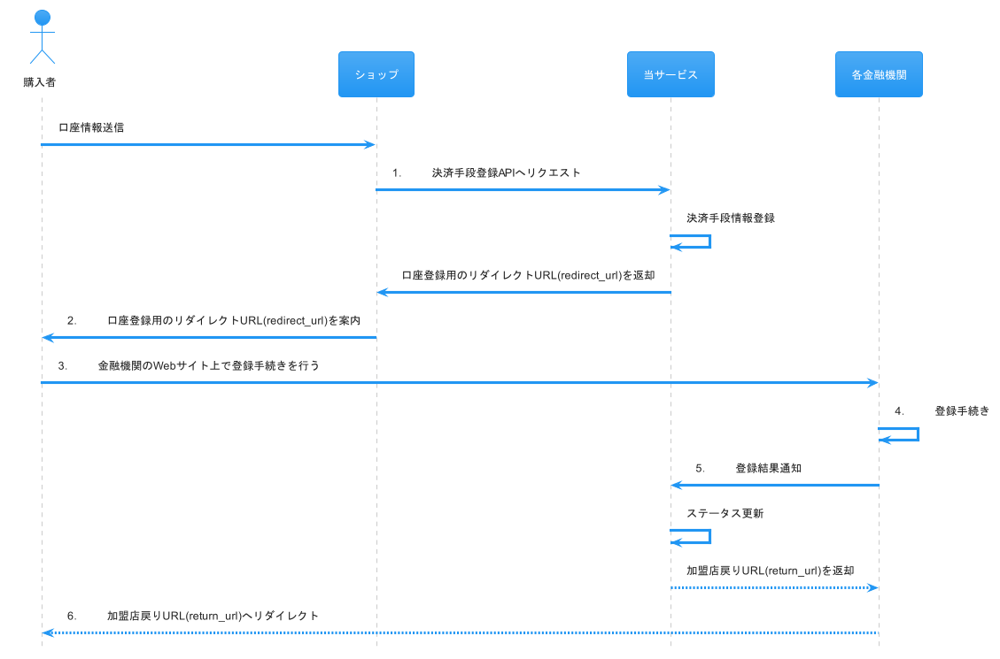

登记账户
要使用银行账户自动扣款，必须先登记买家的账户信息。
fincode 提供“Web 登记”和“申请书登记”两种登记方式。
已登记的账户信息在 fincode API 中作为“支付方式（Payment Method）”实体操作。
账户登记完成后，该支付方式的状态变为ACTIVE: 有効，即可用于处理支付。
| 登记方式 | 详情 | 到可扣款为止所需时间 | 支持的金融机构 | 登记费用 |
|---|---|---|---|---|
| Web 登记 | 将买家引导至 fincode API 返回的账户登记 URL，由买家在该网页完成登记。 所有手续均在线完成。 | 登记完成后即可使用 | 有限制 查看列表 | 仅在登记成功时收取 |
| 申请书登记 | 由买家填写并盖章纸质银行账户自动扣款申请书，再由商户登记账户。 | 自寄出申请书起约 1 至 1.5 个月 | 大多数金融机构均可使用 查看列表 | 免费 |
Web 登记
什么是 Web 登记
买家通过网页浏览器从商户网站进入金融机构的页面，在对应的输入界面填写账户信息。
申请书登记需要填写和邮寄纸质表格，Web 登记则全程在线办理，能够让买家顺畅地完成手续。
用于执行银行账户自动扣款的账户信息在 fincode API 中作为“支付方式（Payment Method）”实体操作。
账户登记手续完成后，该支付方式的状态变为ACTIVE (有効)，即可用于处理支付。
Web 登记流程

- 商户向 fincode 发起登记支付方式请求，并在响应中收到用于登记账户的
リダイレクト先URL(redirect_url)。 - 商户将
リダイレクト先URL(redirect_url)提供给买家。 - 买家访问收到的
リダイレクト先URL(redirect_url)，随后自动跳转到相应金融机构受理银行账户自动扣款的网站。 - 买家在跳转后的银行账户自动扣款受理网站完成身份验证。
- 金融机构将登记结果通知 fincode。
- 买家被重定向至登记支付方式请求中指定的
加盟店戻りURL(return_url)，手续完成。
跳转目标 URL 的访问次数限制
登记支付方式（银行账户自动扣款、Web 登记）响应中返回的リダイレクト先URL(redirect_url)只能访问一次。
从第二次访问起，系统会跳过金融机构的银行账户自动扣款受理网站，直接重定向至加盟店戻りURL(return_url)。
リダイレクト先URL(redirect_url)是否已经被访问，可以通过查看支付方式对象中的リダイレクト先URLアクセス済みフラグ(redirect_url_accessed_flag)是否为1: アクセス済み来判断。
如果买家打开リダイレクト先URL(redirect_url)后，在认证完成前离开了金融机构页面，则需重新执行登记支付方式，重新获取リダイレクト先URL(redirect_url)。
※如果账户登记手续未完成，该支付方式的ステータス(status)仍为AWAITING_CUSTOMER_ACTION: 顧客のアクション待ち，无法用于处理支付。
Web 登记产生的费用
通过 Web 方式登记账户时，除支付手续费外，还会收取 Web 登记手续费。
使用申请书登记或 Web 登记失败时，均不收取此费用。
※详情请查看费率表。
Web 登记手续费会从 fincode 向商户支付的入账款中抵扣。
如果该费用超过当期入账金额，fincode 会向已登记的账单收件方收费。
对于平台类型的商户，Web 登记的账单收件方取决于是否共享客户信息。
共享客户信息
向平台（主商户）收费。
未共享客户信息 向各租户商户收费。平台可以在 Web 登记费用上加收款项，作为标准平台使用费从租户商户获得收入。
申请书登记
什么是申请书登记
买家填写并盖章纸质银行账户自动扣款申请书（下称申请书），商户再将内容登记到 fincode。自回收申请书至首次扣款需约 1 至 1.5 个月，几乎所有金融机构都支持这种方式。
申请书登记流程
第 1 步：请买家填写申请书
请将申请书交给买家并请其填写、盖章。申请书有问题会导致账户登记失败，请按申请书中的说明填写。
提交了错误的申请书将无法受理。
▼使用银行账户自动扣款（1、5、20、26 日）的商户
申请书格式自 2025 年 12 月 1 日起变更。12 月 1 日及以后请使用新版申请书。
银行账户自动扣款（1、5、20、26 日）申请书（2025 年 12 月 1 日起）
银行账户自动扣款（1、5、20、26 日）申请书（截至 2025 年 11 月底）
▼使用银行账户自动扣款（5、6、23、27 日）的商户
银行账户自动扣款（5、6、23、27 日）申请书
第 2 步：回收买家的申请书并填写必要信息
回收买家填写的申请书原件后，请在商户填写栏中填写“申请书 ID”“签约人名义”和“商户 ID”。
申请书 ID 用于关联 fincode 中的登记与纸质申请书。请由商户为每个账户确定并填写此 ID。
第 3 步：将申请书中的账户信息登记到 fincode
请根据从买家处回收的申请书，将账户信息登记到 fincode。
登记支付方式可通过此 API 执行，也可以在控制面板中登记（客户 > 操作 > 账户登记（申请书））。
第 4 步：将申请书和寄送单寄往指定地址
在 fincode 中登记账户之后，请汇总申请书并附上寄送单，一并寄往指定地址。
银行账户自动扣款年度日程列明了相关期限，请按时寄送，确保在截止日之前送达。
即使申请书未能及时送达，fincode 也会向已登记的账户发起扣款请求。
在这种情况下，即使扣款失败也会产生支付手续费。
提交了错误的寄送单将无法受理。
▼使用银行账户自动扣款（1、5、20、26 日）的商户
寄送单格式自 2025 年 12 月 1 日起变更。12 月 1 日及以后请使用新版寄送单。
银行账户自动扣款（1、5、20、26 日）寄送单（2025 年 12 月 1 日起）
银行账户自动扣款（1、5、20、26 日）寄送单（截至 2025 年 11 月底）
▼使用银行账户自动扣款（5、6、23、27 日）的商户
银行账户自动扣款（5、6、23、27 日）寄送单
申请书有问题会导致账户登记失败，建议事先检查。
主要检查以下项目。
| 检查要点 |
|---|
| 确认申请书上的账户信息已正确登记到 fincode。 |
| 使用 A4 纸打印寄送单。 未附寄送单或寄送单尺寸不符，将无法受理。 ※使用银行账户自动扣款（5、6、23、27 日）时，请用 A4 纸打印后沿裁切线裁开。 |
| 申请书提交给金融机构后，原则上不退回原件。 请商户务必保留副本。 |
| 确认寄送单上填写的份数与实际寄送的申请书份数一致。 |
确认申请书登记结果
已寄出的申请书不会退回。请根据以下情况判断登记是否成功。
登记成功
账户成功扣款即视为账户登记完成。
登记失败
如果寄出的申请书有问题，我们会通过已登记的负责人 1 和 2 的邮箱联系您。
如果设置了 Webhookcustomers.payment.methods.updated，也可以通过该事件接收通知。
申请书有问题时，须重新提交新申请书，并在 fincode 中重新登记。
已使用过的申请书 ID 无法再次使用。请分配新的申请书 ID 并告知买家。
删除有问题的申请书 ID 后可以重新使用同一个 ID。请留意，删除时也会清除包括问题详情在内的登记记录。
申请书登记注意事项
如果同一个存款账户过去已通过同一家代收企业成功登记，即使这次提交的申请书有问题且 fincode 已发出通知，扣款本身也可能成功。
这是银行依据日本全国银行协会 2007 年 3 月 7 日的通知所采用的做法，fincode 无法控制。
同一存款账户的申请书处理办法（节选）
对于同一家代收企业使用同一存款账户提交的自动扣款申请书，即使费用等项目的种类不同，银行也可以依据首次提交的申请书处理扣款，无需再次收取申请书。
其他渠道的登记何时失效或解除无法确定。如果收到申请书问题通知，请重新寄送正确的申请书，并在 fincode 中重新登记。